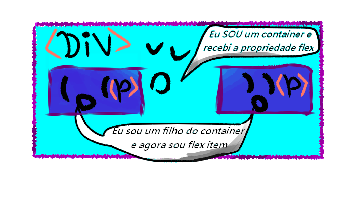

Propriedade Flex
.-
Utilidade
O flex é usado para fazer layouts unidimencionais, sendo um metodo que oferece uma distribuição de espaço entre itens em uma interface e recursos de alinhamento
Container e flex itens
Antes de mais nada, o container nada mais é do que uma div,span,h2,h3 ou algum elemento que sirva para "conter" outros elementos.E quando é usado a propriedade flex block, nesse container, os elementos que estão dentro dele viram flex itens.
Propriedades Relacionadas ao container
Display
flex-direction
flex-wrap
flex-flow
justify-content
aling-itens
aling-contem
Propriedades Relacionadas aos itens
flex-grow
flex-bosis
flex-shrink
flex
order
aling-self
O comportamento na prática
ContainerHI flex-itensHello flex-itensOI flex-itensComo pode se notar ao aplicar a propriedade display:flex ao container, ele muda a forma em que os items que estão dentro dele são organizados, indo de uma organização em coluna para uma em linha.
Propriedade flex-direction
hi
hello
oi
:)
:3
"_"
Com a propriedade flex-direction nos podemos, mudar o comportamento dos flex-itens de se alinharem de forma "em linha" para uma forma de "coluna" ou até mesmo uma forma reversa de linha e coluna.
O reverse ele trabalha básicamente dizendo que a linha de onde deve se começar a aparecer os itens é na direita (no caso de se usar o row-reverse), e de baixo para cima (para o caso de seu usar o colun-reverse)
O valor padrão que vem é o flex-direction:row
Propriedade flex-wrap
.Como se pode ver com a propriedade wrap nos podemos liberar a quebra de linha de dentro do containeir, ou não.Por padrão essa priedade já vem setada como nowrap
Essa propriedade é bem simples de se entender tirando um pouco do wrap-reverse.O wrap-reverse ele funciona basicamente dizendo para que quando for ocorrer a quebra linha ela seja feita para cima e não para baixo.
Uma coisa interessante da propriedade wrap-reverse é que se o container tiver um height expecificado fica bem claro o seu funcionamento, como é o caso do exemplo acima
Flex-flow
A mãozinhauma "mãozinha" ou shorthand é uma linha que faz o trabalho de juntar dois ou mais comandos em apenas uma linha, como o caso do flex-flow : <flex-direction> <flex-wrap>;
eles não são separados por virgulasjustify-content :(flex-direction:"row")
Essa propriedade faz um alinhamento dos itens de forma que se pode escolher a direção e ou tratar da distribuição desse elementos dentro do container.
valores cabiveis
- flex-start os itens serao flexionados para ao lado esquerdo do container;
- flex-end os itens serao flexionados para ao lado direito do container;
- center os itens serão flexionados para ao centro do container;
- space-between Cria um espaçamento igual entre os itens;
- space-around Os epaços entre os itens são o dobro.
Essa propriedade vem setada como padrão flex-start
justify-content :(flex-direction:"row")
A unica diferença desse exemplo para o passado é que o flex-direction
flex-grow :
O "flex-grow :" ele é usado para definir a procporção de um item ao container, ou seja, esse valor tem que ser setado nos itens e não no conteiner.
Os valores que podem ser postos ao flex-grow são valores que variam do 0 a um numero maior.
obs: essa propriedade não funciona em conjunto ao justify-content.